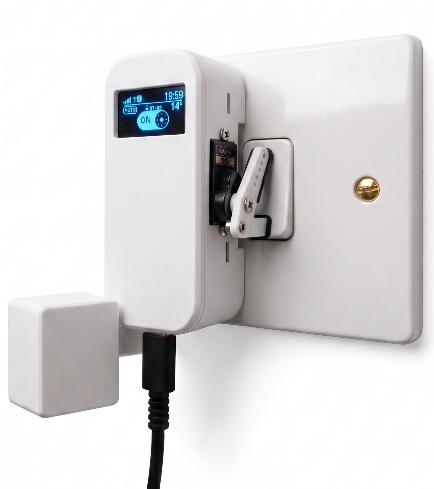
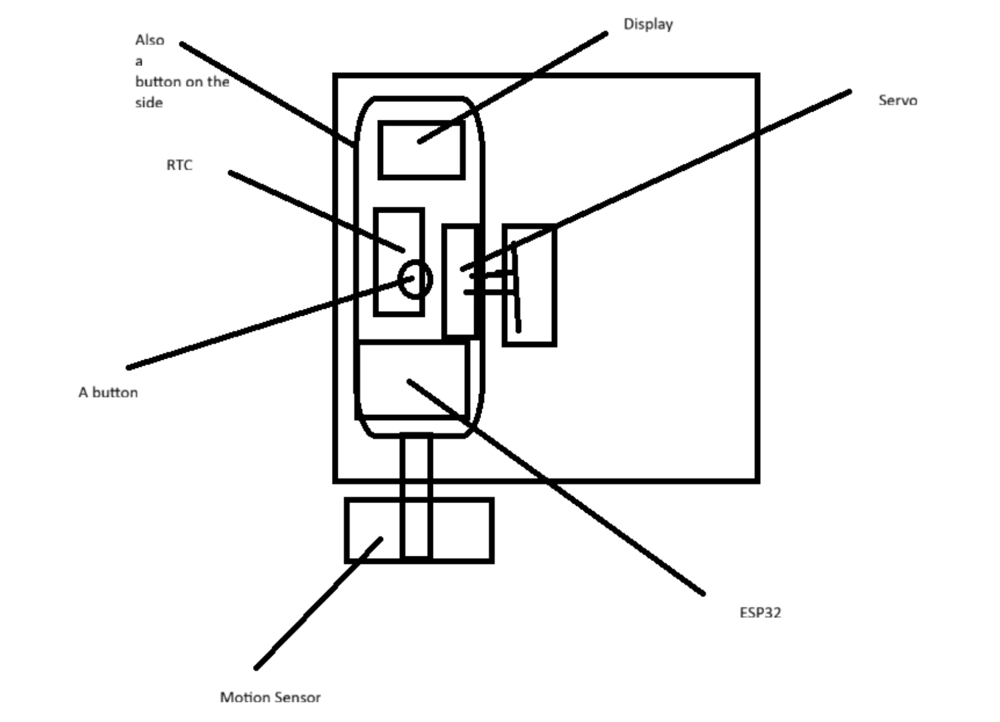

Built from 2022 to 2023, over three versions
The light switch
A box that sits over the light switch in my bedroom and presses it with a servo. The switch itself stays exactly as it was, so I never had to go near the mains wiring.
- Built
- 2022–23, three versions
- Microcontroller
- ESP32-C6
- Presence sensing
- 24 GHz mmWave radar
- Power
- USB-C

OLED screentime, weather, mode
SG90 servopresses the rocker
RadarLD2410C, 24 GHz
USB-C power
Why it presses the switch
The usual way to make a light smart is to replace the switch, which means working on the mains wiring. I didn't want to do that in my room, so the controller sits over the existing rocker and a small servo presses it for me. Take the box off and the switch works exactly like it did before.
It runs off USB-C. Inside there's an ESP32-C6, a radar module for presence, two touch pads, a small OLED screen and the servo. It talks to the blinds controller and the Zaylo Remote app over MQTT, and to Alexa and Google Home through SinricPro.

Most of that plan survived. The RTC didn't, because the switch gets the time over Wi-Fi instead. The single button turned into two touch pads, and the motion sensor turned into a radar so it can tell when someone is sitting still.
How the parts connect
The radar and the touch pads are the inputs. The ESP32-C6 decides what the light should be doing, then moves the servo and updates the screen. Everything that needs the network goes over Wi-Fi.
- Radar→ESP32-C6
Readings over UART on GPIO 0 / 20, and a presence signal on GPIO 14.
- Touch pads→ESP32-C6
Action on GPIO 3, menu on GPIO 1.
- ESP32-C6→Servo
A PWM signal on GPIO 2 sets the arm position.
- ESP32-C6→OLED
I²C on GPIO 21 / 22.
- ESP32-C6→Network
Wi-Fi to the MQTT broker, SinricPro and OpenWeatherMap.
The five modes
Most of the time it's in Auto. The other four are for when I want to override it, or when the time of day matters more than whether someone is in the room.
01AutoThe room decides
The normal mode. The radar decides whether the room is occupied, and the light follows that.
- Someone comes in
- Auto
- Light follows the room
02ManualI decide
A tap on the touch pad or a command from the app overrides the radar. After a timeout it goes back to Auto on its own.
- Tap or app command
- Manual
- Temporary override
03AlarmLight on at a set time
Turns the light on for a scheduled wake-up. Tapping the pad cancels it and drops into Manual.
- Alarm time
- Alarm
- Light on
04BedtimeStays off while I fall asleep
Stops the radar switching the light on when I move around in bed. Holding the touch pad turns it on or off.
- Hold the pad
- Bedtime
- Radar ignored
05LockedKeeps what it's doing
Nothing changes the light until it's unlocked. A double tap locks and unlocks it.
- Double tap
- Locked
- Light stays as it is
Daylight is separate
Between sunrise and sunset the radar doesn't turn the light on. That's a setting on top of the modes, not a sixth mode.
Safe mode isn't a normal mode
It only happens after repeated crashes. There's more on it in when something goes wrong.
Detecting presence
I used radar because an ordinary motion sensor stops seeing you once you sit still, which is exactly when I want the light to stay on. The LD2410C reports movement in nine distance gates, and the firmware filters those readings before it decides whether anyone is in the room.
Two filters
A fast one reacts to big movements and a slow one follows small changes. Together they turn the light on as I walk in without turning it off when I sit down.
Different on and off thresholds
Turning the light on needs a stronger signal than keeping it on, so it doesn't flicker on and off when a reading sits right on the edge.
Learning the room
At start-up, and again whenever the room is empty, it measures the background readings so it has something to compare against.
Ignoring its own servo
Detection pauses while the servo moves and for a moment afterwards. Otherwise it would see itself pressing the switch and think someone was there.
Pins and connections
These are the connections in my build. If you reuse them, check them against the pin definitions in the firmware for your board first.
| Part | Model | Pin | Signal | What it does |
|---|---|---|---|---|
| Servo | SG90 | GPIO 2 | PWM | Presses the switch |
| Presence out | LD2410C | GPIO 14 | Digital in | Hardware presence signal |
| Radar RX | LD2410C | GPIO 20 | UART, 256k | Readings and settings |
| Radar TX | LD2410C | GPIO 0 | UART, 256k | Readings and settings |
| Action pad | TTP223 | GPIO 3 | Digital in | Tap to toggle |
| Menu pad | TTP223 | GPIO 1 | Digital in | Menu and calibration |
| Display SDA | SSD1306 128×64 | GPIO 21 | I²C, 400k | Data |
| Display SCL | SSD1306 128×64 | GPIO 22 | I²C, 400k | Clock |
Sleep tracking
This started as a programming experiment. The switch already records when I go to bed and when I get up, so I wrote a score from those events. It all runs on the switch. It can only estimate habits from the times it records, so it doesn't measure sleep in any medical sense.
How long I slept compared with the target I set.
How much my bedtime moves around. The aim is under 15 minutes.
How close bedtime was to the time I picked.
Whether I woke near the end of a 90-minute cycle.
The interesting part is the averaging. You can't just average clock times, because 23:30 and 00:30 average to midday. So each bedtime becomes an angle on a circle and the firmware averages those instead.
Average bedtime
Each time is an angle θ round a 24-hour circle. Averaging the sines and cosines gives the right answer either side of midnight.
Duration score
Full marks at the target length, falling off smoothly either side. The 1.2 sets how quickly it drops.
On top of the score it keeps a running total of sleep I've missed over the last seven days, warns me when my weekend bedtime drifts more than an hour from weekdays, sorts the pattern into Regular, Night Owl, Early Bird or Irregular, and suggests a bedtime from my wake-up time and target length.
Talking to the blinds and the app
Wi-Fi is the main connection, but the switch doesn't need it to work. The radar, touch pads and modes all run on the device, so if the network goes down it carries on as a normal presence-controlled light.
The app
Zaylo Remote is where I change modes, set schedules, look at the sleep scores and tune the radar. Local control goes over the home network.
Bluetooth setup
The Wi-Fi details go in over Bluetooth the first time. If it loses Wi-Fi later, Bluetooth recovery turns on so I can fix it without taking it off the wall.
MQTT
It publishes the light state, motion levels, sleep scores and temperature to a broker on my home network, and listens for commands.
Alexa, Google Home and weather
Voice commands come in through SinricPro. Sunrise, sunset and temperature come from OpenWeatherMap. Both need an internet connection.
Closing the blinds when the room is empty
Because the switch already knows whether the room is occupied, it shares that over MQTT. The blinds controller listens for it and closes the blind once the room has been empty for a set time. It only works while both devices can reach the broker.
Wi-Fi 6 power saving
The ESP32-C6 supports Target Wake Time, which lets it agree wake-up windows with the router and sleep the radio in between. It's a toggle in the app. I haven't measured how much it actually saves yet, and it depends a lot on the router.
When something goes wrong
The switch is on my wall all the time, so it has to recover from power cuts and bad updates without me opening it up.
- 15s
Start-up delay
The servo stays off for the first 15 seconds after power-on, so the supply can settle before the motor starts drawing current.
- 2
Copies of the settings
Settings are saved in two slots, each with a checksum. If the power cuts out halfway through a save, it loads the other copy on the next start.
- 3
Crashes before safe mode
After three unexpected restarts in a row it stops the motor, Wi-Fi and radar and shows a warning. It tries to start normally again after 10 minutes.
- OTA
Updates that roll back
A new firmware update only becomes permanent once the switch has started up and connected properly. If it crashes, it rolls back to the last version that worked.
If I come back to it
The switch is finished, but if I go back to it, the first thing I'd add is a link to Atlas, my balancing robot, over MQTT. Getting Atlas to balance properly comes first.
For now, the easiest way to see what the switch can do is the app demo. It has pretend versions of the switch and the blinds you can play with.
Try the Zaylo Remote demo